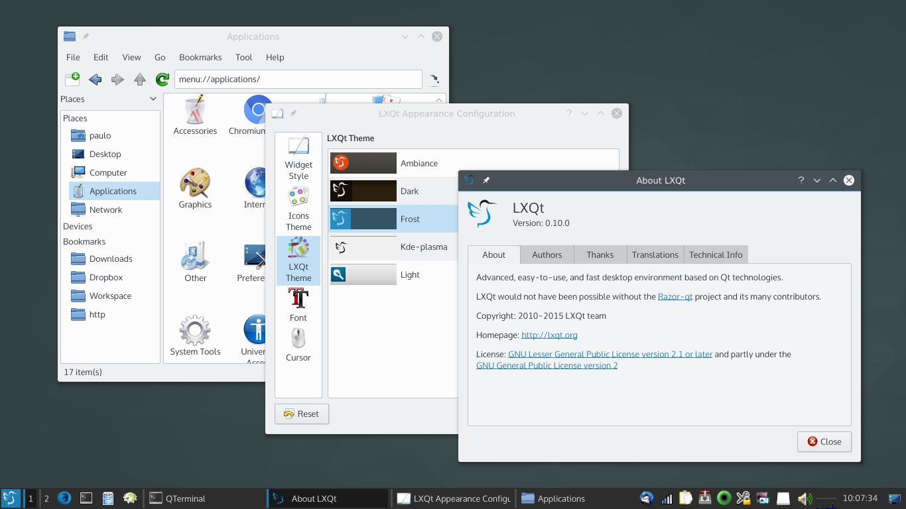
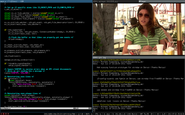

Введение
Зачем изучать Linux?
Рыночные доли десктопных ОС:
- Windows - 85-88%
- Mac OS - 10%
- Linux - 2-5%
Рыночные доли мобильных ОС:
Рыночные доли серверных ОС:
- UNIX - 30%
- Linux - 30%
- Windows Server - 30%
Основные сферы применения Linux:
- серверы (веб-сервер, сервер СУБД, файл-сервер, сервер виртуализации, сервер службы каталогов)
- смартфоны и носимая электроника (Android, Tizen, Maemo)
- встраиваемые системы (Raspberry Pi, медиа-приставки, смарт-телевизоры, автомобили)
- сетевое оборудование
- вычислительные кластеры
- технологическое оборудование
Каким специалистам нужно изучать Linux?
- Научные работники;
- Системные администраторы и администраторы БД;
- Разработчики.
Благодаря совместимости с POSIX принципы работы в Linux унифицированы с UNIX.
Что такое дистрибутив?
Linux — операционная система с открытым исходным кодом.
Ядро Linux было создано Линусом Торвальдсом. Ядро Linux продолжает развиваться с 1991 года по сегодняшний день под его руководством.
Что делает ядро ОС?
- предоставление прикладным программам удобной и эффективной среды для работы;
- организация эффективной совместной работы прикладных программ;
- управление ресурсами компьютера (процессорным временем, оперативной памятью, внешней памятью, устройствами ввода-вывода и т. д.);
- реализация высокоуровневых программных абстракций (файл, процесс, сетевое соединение и т. д.)
Для создания полноценной ОС ядру Linux необходимо системное и прикладное ПО:
- системные утилиты;
- компиляторы (трансляторы, компоновщики, интерпретаторы, ассемблеры и т.п.);
- командный интерпретатор (оболочка);
- и т. д.
FSF — Free software Foundation (Р. Столлман) — фонд свободного ПО, который в рамках проекта GNU, разрабатывает широкий спектр ПО под лицензией GPL.
В ОС Linux в качестве системного ПО используются:
- GNU Coreutils
- GNU Binutils
- GNU Compiler Collection
- GNU Bash
Дистрибутив Linux = Ядро Linux + системное ПО + прикладное ПО
Обзор дистрибутивов Linux
Дистрибутивы Linux:
-
Debian. Дистрибутив Debian создан в 1993 году супругами Деброй и Иеном Мердок и является одним из старейших дистрибутивов Linux, активно развивающихся на сегодняшний день. Имеет 3 варианта:
- Debian Stable — вариант Debian в котором все пакеты максимально оттестированы;
- Debian Unstable (Sid) — вариант Debian в котором самые новые, но не неоттестированные пакеты;
- Debian Testing — вариант Debian в котором пакеты проходят тестирование. В определенный момент он становится Stable-дистрибутивом;
-
Семейство Ubuntu создано на базе Debian Testing и поддерживается компанией Canonical во главе с Марком Шаттлвортом.
- Ubuntu Desktop — десктопный дистрибутив на базе Gnome 3;
- Ubuntu Server — популярный серверный дистрибутив;
- Edubuntu — десктопный дистрибутив на базе Gnome 3 для образования;
- Ubuntu Studio — десктопный дистрибутив на базе Gnome 3 для редактирования мультимедиа-контета;
- Ubuntu Kylin — десктопный дистрибутив на базе Gnome 3 для Китая;
- Kubuntu — десктопный дистрибутив на базе KDE;
- Lubuntu — десктопный дистрибутив на базе LXDE/LXQT;
- Ubuntu Budgie — десктопный дистрибутив на базе Budgie;
- Ubuntu Mate — десктопный дистрибутив на базе Mate;
- Xubuntu — десктопный дистрибутив на базе Xfce.
-
Дистрибутивы основанные на базе Debian / Ubuntu:
- Mint — дистрибутив ориентированный на удобство и стабильность;
- elementary — дистрибутив с интерфейсом напоминающим Mac OS;
- Zorin — дистрибутив с красивым графическим интерфейсом пользователя;
- Kali Linux — дистрибутив для специалистов по информационной безопасности;
- The Amnesic Incognito Live System (Tails) — дистрибутив ориентированный на приватность и конфиденциальность;
- Deepin — дистрибутив на базе Debian Stable с графическим окружением Deepin;
- MX Linux — сбалансированный дистрибутив с графическим окружением Xfce на базе Debian Stable;
- antiX — дистрибутив для устаревших компьютеров на базе Debian Stable;
- SteamOS — игровой дистрибутив основанный на Debian.
-
RedHat — американская корпорация, крупный разработчик свободного ПО и одноименное семейство дистрибутивов:
- RedHat Enterprise Linux (RHEL) — серверный дистрибутив с платной поддержкой;
- Fedora — бесплатный дистрибутив, на котором RedHat обкатывает все новейшие изменения;
- CentOS — свободный бесплатный клон RHEL;
- Oracle Linux — вариант от Oracle;
- Amazon Linux — вариант дистрибутива от Amazon.
-
ArchLinux — независимый дистрибутив, развиваемый сообществом и отличающийся максимально новым ПО, простотой и гибкостью кастомизации.
- Manjaro — вариант дистрибутив ArchLinux с графическим установщиком и рядом всмопогательных утилит.
-
Другие известные дистрибутивы:
- Slackware — олдскульный и простой дистрибутив, поддерживаемый Патриком Фолькердингом
- SUSE Linux Enterprise Server (SLES) — популярный серверный дистрибутив с платной поддержкой от компании SUSE
- openSUSE — популярный бесплатный дистрибутив от компании SUSE
- Gentoo — дистрибутив использующий установку ПО из исходных кодов.
- Solus — дистрибутив с графическим окружением Budgie.
Стабильность или новизна?
По графику выхода релизов дистрибутивы можно разделить на две категории:
-
Фиксированные релизы — время от времени (в некоторых случаях, по заранее оговоренному графику) выпускается очередной релиз дистрибутива. Каждый релиз имеет оговоренный срок поддержки. Во время срока поддержки релиз дистрибутива получает обновления безопасности. Релизы с пометкой LTS имеют удлиненный срок поддержки. Обновление на новый релиз часто производится путем переустановки системы. Примеры:
- Дистрибутив Ubuntu имеет четкий график выхода релизов — два раза в год в апреле и октябре. Каждый релиз отмечен номером года и месяца, например 18.10 (октябрь 2018) или 19.04 (апрель 2019). Каждые два года в апреле выходит LTS релиз (20.04, 18.04, 16.04, 14.04 и т.д.). Из-за жесткого графика выхода релизов иногда у них бывают проблемы некоторыми пакетами. Поэтому ответственные системы не рекомендуется обновлять сразу после выхода релиза.
- Дистрибутив Debian Stable выпускается только после нескольких месяцев тщательного тестирования, когда мейнтейнеры уверены в его стабильности. Выход дистрибутива происходит обычно раз в несколько лет, однако строго оговоренного графика нет.
-
Плавающие (роллинг) релизы — установленная система получает обновления в виде постоянного потока обновлений пакетов без выхода четко сформированных релизов. Примеры:
- Дистрибутив ArchLinux — отличается новизной пакетов и вследствие этого нестабильностью в работе после обновления. Дистрибутив предназначен для энтузиастов, которым необходимо самое новое ПО и не рекомендуется для серверного применения.
Дистрибутивы с фиксированными релизами, в целом, ведут себя стабильнее чем плавающие релизы. Объясняется это тем, что мейнтейнеры могут более тщательно протестировать его. При этом, при переходе с релиза на релиз происходят глубокие структурные изменения.
Дистрибутивы с плавающими релизами, в среднем, имеют более свежее ПО, однако структурные изменения происходят плавно и постепенно.
Наиболее важными для практического применения в промышленном программировании являются серверные дистрибутивы.
Серверные дистрибутивы Linux отличают упор на:
- стабильную безошибочную работу
- регулярная публикация обновлений безопасности
- длительный срок поддержки
На сегодняшный день на рынке серверных ОС представлены следующие системы:
-
различные версии Windows Server (около трети рынка)
-
семейство Unix (около трети рынка):
- BSD (FreeBSD, OpenBSD, DragonflyBSD, NetBSD)
- Mac OS for Server
- IBM AIX
- Hewlett-Packard HP-UX
- Oracle Solaris
-
Семейство Linux (около трети рынка):
Интерфейс командной строки
Основным способом управления серверных систем является использование интерфейса командной строки. Этот способ требует минимальных системных ресурсов и достаточно легко реализуется программистами.
При этом, настройки программы хранятся в конфигурационных файлах, а часто повторяющиеся действия автоматизируются с помощью скриптов.
Графический интерфейс пользователя
Окружение рабочего стола (Desktop Environment) — это набор ПО, позволяющий создать полноценный графический интерфейс пользователя.
- GNOME 3
- KDE
- Xfce
- LXDE / LXQt
- Mate
- Budgie
Оконный менеджер (Window Manager) — это приложение управляющее работой окон приложений. Оконный менеджер является частью окружения рабочего стола. Оконный менеджер может работать самостоятельно.
Оконные менеджеры бывают двух типов:
- Стекируемый — окна могут изменять размеры и положение независимо от других окон, а также могут заслонять их собой (как в ОС Windows)

- Тайловый — экран разделяется на смежные области занятые окнами приложений. Увеличение окна одного приложения приводит к уменьшению других окон.

Идентификация дистрибутива
Для идентификация дистрибутива можно использовать следующие команды:
uname -a — запрос версии ядра Linuxlsb_release -a — запрос описания дистрибутиваcat /etc/issue — текстовый файл с именем дистрибутиваcat /etc/*-release — текстовый файл с именем дистрибутиваcat /proc/version — текстовый файл с версией ядра Linuxscreenfetch / neofetch — дополнительные утилиты
Литература